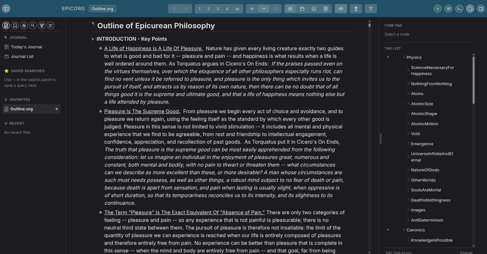
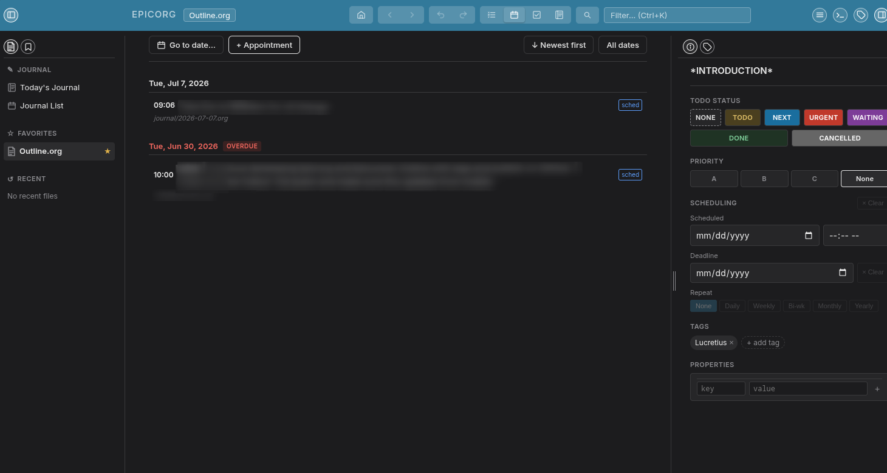

A keyboard-driven outliner for .org files. Think Workflowy — but your data stays in plain text on your own machine, editable in Emacs, any text editor, or epicorg itself.


Your data lives in standard .org files. Open them in Emacs, edit them with any text editor, commit them to git — no lock-in.
Navigate, create, indent, move, and fold without touching the mouse. A command palette puts every action one keystroke away.
Choose bullets, numbers, or letters (a–z / A–Z) globally or per depth level. Preference is saved into the org file and survives across machines.
Search across every org file in your workspace instantly. Jump straight to any matching item.
All dated items sorted chronologically with overdue and today indicators — a lightweight daily agenda without leaving the browser.
Tag items and filter the outline by tag. Bookmark any item for instant cross-file navigation. Both can live in dedicated org files.
Alt+1 through Alt+9 collapses the entire outline to that depth in one keystroke. Hoist any node to focus on just that subtree.
External edits are detected via SHA-256 hash and merged automatically with git merge-file. Conflicts surface as standard markers in the UI.
One Go binary embeds the entire frontend. No npm, no Node.js, no runtime dependencies. Drop it anywhere and run it.
Export any document as a self-contained HTML file with navigation, tag filter, dark/light toggle, and your chosen bullet style and accent color.
Clickable TODO/DONE badges stored as standard org keywords. Date picker writes DEADLINE properties — fully Emacs-compatible.
Document-wide undo and redo. Typing coalesces per pause so Ctrl+Z steps back at a natural granularity.
Pre-built binaries for Linux, macOS, and Windows are published automatically as nightly releases. Download the binary for your platform, make it executable, and run it.
# Linux example
chmod +x epicorg-linux-amd64
./epicorg-linux-amd64 ~/orgOpens ~/org in your browser. The directory is created if it doesn't exist.
Go 1.21 or later required. No other build-time dependencies.
git clone https://github.com/cassiusamicus/epicorg
cd epicorg
go build -o epicorg .
./epicorg ~/orgOr try the included example: ./epicorg examples/ — opens automatically.
epicorg reads and writes plain .org files with no proprietary extensions.
Bullet-style preferences are stored as a #+EPICORG_FORMAT: keyword so they
travel with the file. When format is numbers, epicorg also writes
#+STARTUP: num so Emacs org-num-mode activates automatically.